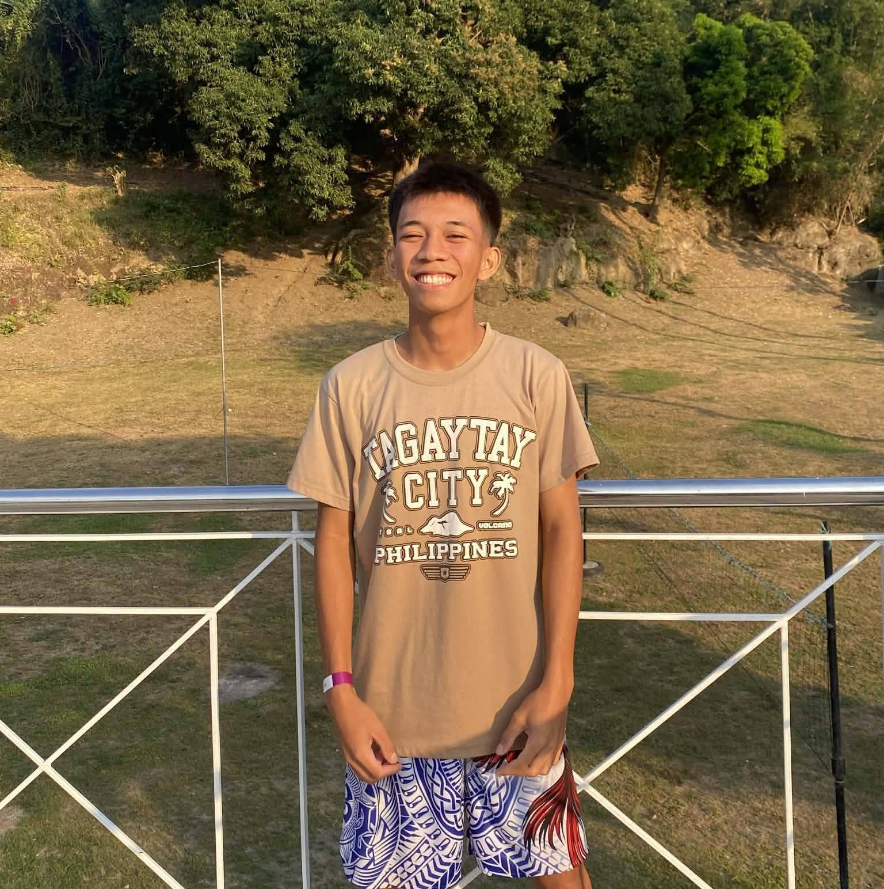

01 / OUTDOORS
01 / OUTDOORSTHE PERSON BEHIND THE PAGE
A bit about
me.
More than a list of facts — a few things that make up my everyday world.

CHARLES A AALA · 2026HELLO, THERE
Learning as I go.
Hi! I’m Charles A Aala, a student who enjoys staying active, discovering new interests, and learning something new along the way. I made this journal to share the activities and everyday experiences that matter to me.
For me, hobbies are a way to reset, stay curious, and keep growing. Whether I’m out for a run or playing a team sport, I enjoy the process as much as the result.
Keep moving forward ↗
MY FAVORITE ACTIVITIES
Four ways to recharge.
01 / OUTDOORS 02 / ENDURANCE
02 / ENDURANCERunning
 03 / TEAMWORK
03 / TEAMWORKBasketball
 04 / TEAM SPIRIT
04 / TEAM SPIRITFootball
01
Stay active
02
Keep learning
03
Enjoy the moment